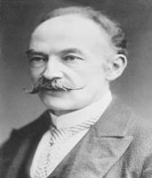

(1840 – 1928)

Thomas Hardy öldüğü yıl sinema sessiz filmleri bırakmış, sesli filmlere daha yeni geçmişti; ama onun romanları her zaman sinemacıların büyük ilgisini çekti ve hemen hemen her romanı birkaç kez sinemaya uyarlandı. "Çılgın Kalabalıktan Uzak" romanında İngiltere'ye bambaşka bir gözle bakan Hardy, hâlâ en çok okunan İngiliz yazarlarından biridir.
İngiliz romanının önemli adlarından Thomas Hardy (okunuşu: Tomas Hardi) 2 Haziran 1840 günü İngiltere'de, Dorset County'de dünyaya geldi. Annesi Jemima ev kadını, babası Thomas ise duvarcı ustasıydı. İlköğrenimine köy ilkokulunda başlayan Thomas daha sonra Dorchester'da bir okula gitti ve orada Latin, Yunan ve Fransız klasiklerini okudu. On altı yaşındayken mimar John Hicks'in yanına yardımcı olarak girdi ve 1962 yılında Londralı mimar Arthur Blomfield'ın yanına gidene kadar onunla çalıştı. O sıralarda yaşam boyu arkadaşı ve yol göstericisi olacak olan Henry Moule (1801–1880) ile tanıştı. Moule ona hem kültür-sanat alanında kendini geliştirmesi için yardımcı oldu hem de onun Londra sanat çevrelerine katılmasını sağladı. İlk öyküsü Nasıl Kendime Bir Ev İnşa Ettim? 1865'te yayımlandı. İlk romanı Yoksul Adam ve Hanımefendi'yi 1868'de yazdıysa da kitap, sivri dili ve sosyalist bakış açısı nedeniyle yayımlanamadı. 1870 yılında Emma Lavinia Gifford'la tanıştı ve çift dört yıl sonra evlendi. Yayımlanan ilk romanı, 1871 yılında imzasız olarak çıkardığı Umutsuz Çareler oldu. 1872 yılında ise ikinci romanını bu kez kendi adıyla yayımladı: Defne Ağacı Altında.
1873 yılında da Bir Çift Mavi Göz yayımlandı, ama yazar Thomas Hardy olarak asıl ününü 1874 yılında yayımlanan Çılgın Kalabalıktan Uzak adlı yapıtıyla sağladı. Kitap önceleri bir dergide imzasız olarak tefrika edildi; ama gördüğü büyük ilgi üzerine devamında yazarın adı verilmeye başlandı. Gördüğü ilgi üzerine Hardy, mimarlığı bırakıp tamamen yazarlığa yöneldi ve romanları birbirini takip etti: Başborazancı (1880), Tess (1891), Hayatın Küçük İronileri (1894), Kulede İki Kişi (1895) ve Asi Kalpler (1895). Ne var ki romanlarında anlattıkları Victoria Dönemi İngilteresinin muhafazakar toplum yapısına uymadığı için yazar, hızla gözden düşmeye başladı. Romanlarının asıl değeri, üzerlerinden yıllar geçtikten sonra anlaşıldı. Araya da Çok Sevilen (1912), İnsan Gösterileri (1925) ve Kış Sözleri (1928) gibi oyunlar sığdırmayı başaran Hardy, Wessex Şiirleri ve Başka Dizeler (1898), Şiirler: 1912-1913, Görüş Anları (1917) ve Son Şiirler ve Öncekiler (1922) gibi şiir kitapları da yayımladı.
1914 yılında Thomas Hardy, sonradan yazarın iki yaşamöyküsünü yazıp yayımlayacak olan sekreteri Florance Emily Dugdale (1879–1837) ile evlendi. İngiliz romanının hırçın ve özgün adlarından Thomas Hardy, 11 Ocak 1928'de Dorchester'daki evinde öldü ve kalbi Dorset'teki Saint Michael Kilisesi Mezarlığı'na gömüldü. Külleri ise Londra'daki Westminister Kilisesi'ndeki "Şairler Köşesi"ne kaldırıldı.
Seçme Romanları: Umutsuz Çareler (1871), Defne Ağacı Altında (1872), Çılgın Kalabalıktan Uzak (1874 – Can Yayınları, 2010), Tess (1891), Adsız Sansız Bir Jude (1895 – İletişim Yayınları, 2008)